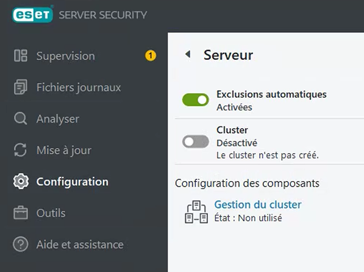

Tutorial – File Server Health Check
This check verifies that the antivirus is installed and properly configured on the File Server.
Incorrect antivirus configuration or missing exclusions can cause:
Open the antivirus console on the File Server.
Navigate to:
Verify that:
Automatic exclusions help prevent performance issues and file access problems on the File Server.
